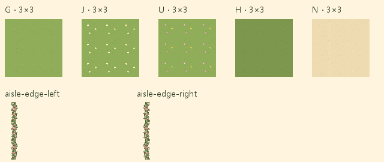
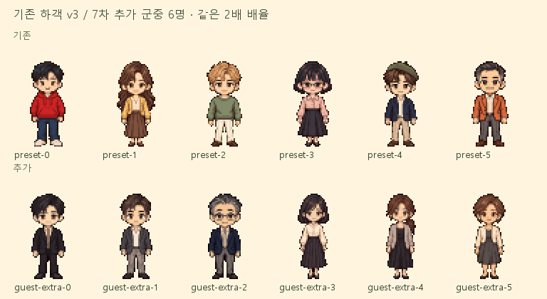
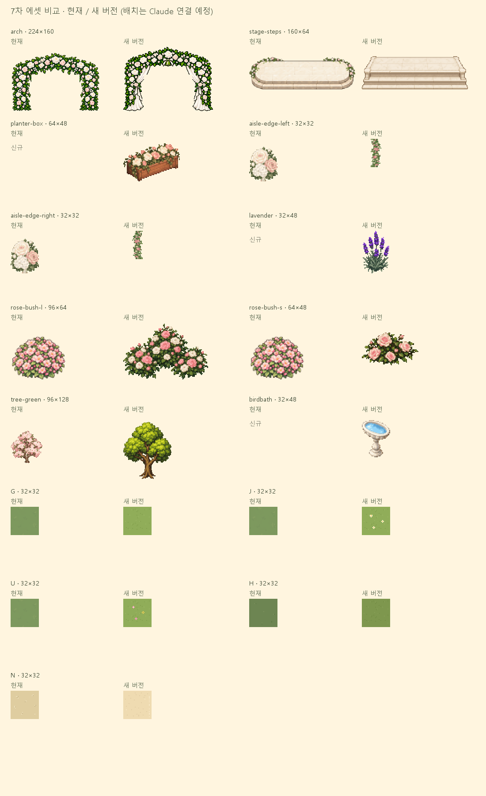

7차 그림 제작 완료 · 신규 장식 배치는 Claude 담당
종·커튼 아치, 돌계단과 이어지는 꽃길
기존 PNG와 캐릭터를 보존했습니다. 아치·단상·바닥은 manifest로 새 버전을 선택하며, 꽃띠·식생은 새 ID로 등록했습니다. 아래는 크기와 가림을 보는 정적 배치 모형입니다. 실제 앱의 배치·충돌·입장 연출은 바꾸지 않았습니다.
커플 발은 두 모형 모두 (176,176)입니다. 새 아치의 (52,70)–(172,160)은 완전 투명입니다. 중앙 96px 길과 그 밖의 꽃띠를 확인합니다. 초록 나무는 크기 비교용으로만 바꿨으며 실제 게임의 벚꽃나무는 그대로입니다.
3×3 타일 반복 · 꽃띠 세로 연결

G/J/U의 바탕 픽셀은 같은 G를 공유하고 생성된 꽃만 합성했습니다. H는 G 밝기 7/8입니다. 가장자리 픽셀은 서로 일치합니다. J/U는 성긴 비율로 섞어야 꽃이 격자처럼 반복되는 인상을 피할 수 있습니다. 현재 광장에 섞는 배치는 Claude 작업입니다.
추가 군중 하객 6명 · D 항목 완료

48×72 RGBA, 실제 높이60px, 발 기준 y72, 투명 포함32색 이하입니다. 기존 선택 하객10종을 보존하고 guest-extra-0~5를 별도 준비했습니다. manifest에는 파일 목록을 등록했으며 로더 허용 목록과 군중 배치는 Claude 연결 작업입니다. 이름표가 없는 군중용이며 선택 프리셋 수를 늘리는 작업이 아닙니다.
추가 하객 규격 · 추가 하객 생성 프롬프트
전체 파일 · 같은 배율 비교

규격·bbox·색 수 · 생성 프롬프트·이전 매핑 · 현재 게임